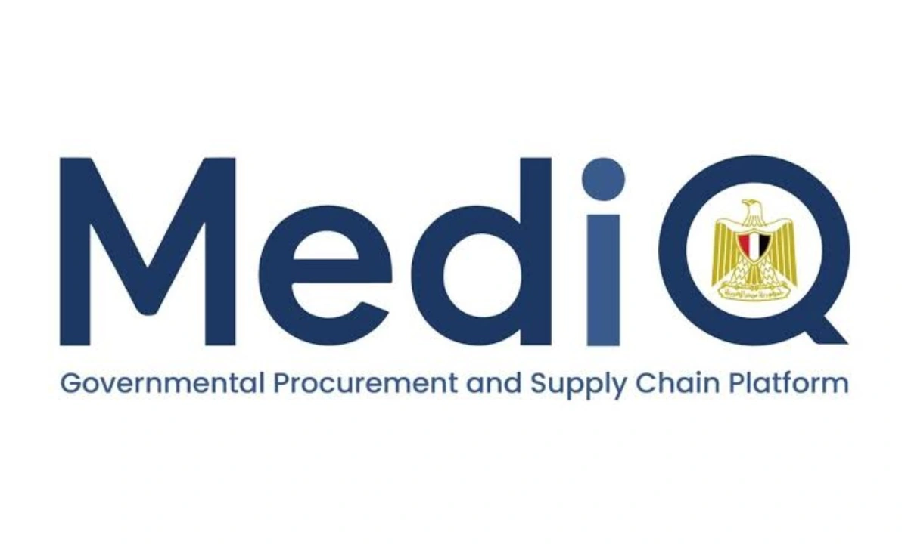

Executive Portfolio
Technology leadership across strategy, architecture, governance, and delivery.
Mahmoud Salama directs an EGP 150M+ portfolio, leads 40+ professionals, and has led or contributed to 150+ digital initiatives.
Executive Focus
Accountable technology leadership
Strategy
Connect investment, roadmaps, stakeholders, adoption, and measurable outcomes.
Architecture
Design governed platforms, integration, data, security, and resilient operations.
Governance
Establish ownership, quality, risk, auditability, vendor controls, and accountable decisions.
Delivery
Translate priorities into iterative execution, QA, release governance, adoption, and measurement.
Selected Programs
Flagship case studies

Led architecture & governance
MedIQ / Unified Procurement & Medical Supply Ecosystem
A governed 10-platform ecosystem supporting procurement, approvals, inventory, distribution, supplier processes, and supply-chain controls across 12,000+ public-sector entities.
Read case study
Led architecture
Egypt's National Health Sector Data Warehouse
A governed enterprise data environment for 100+ government institutions, processing 12M+ records daily and supporting executive analytics.
Read case study
Directed integration architecture
Microsoft Dynamics 365 ERP & CRM Integration
Controlled integration connecting procurement, operational, stakeholder, reporting, and data platforms with Dynamics 365 ERP and CRM.
Read case study
Led full-cycle delivery
Oman National Educational Portal
A national education platform supporting e-learning, content management, academic records, administration, and performance tracking.
Read case studyProfessional Contributions
Governance, oversight, and speaking
World Bank Group B-READY Egypt Assessment
Digital Transformation Committee Member, 2025-2026
National Blood Operations Oversight
Board Member appointed by Egypt’s Minister of Health, 2021-2024
National Pharmaceutical Track & Trace
Governance Lead, 2021-2024
Manama Health Congress & Expo
International speaker on bioinformatics and digital health, 2022
Africa Health ExCon
Digital health and technology contributor, 2021-Present